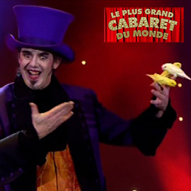

Ook in een zaal vol met ingenieurs en technisch geschoolden, wist Daniel Adrian iedereen met stomming te verbazen.
Vanessa DD
Zelden 150 mensen met de mond open zien staan voor de show van deze goochelaar!!!
Bedankt Daniel Adrian, U was FANTASTISCH!!!! Wat een geweldige show! Bedankt.
Familie Cornelis
Uren werd er nog nagepraat over Uw optreden tijdens ons huwelijk! Heel professioneel en met de nodige humor.
Danielle B
Hartelijk dank voor de mooie uitéénzetting afgelopen vrijdag! Het was fantastisch.
Sylvie MM - Ipsos Belgium
Het communiefeest van Casper was echt geslaagd door de act van Daniel Adrian. Ongelofelijk hoe hij het doet ! Echt een topact
My guests are still talking about it! Just amazing...
Christine C
Heel erg bedankt om aanwezig te zijn op de opening van ons nieuw kinderdagverblijf. De balloncreaties waren schitterend!
Nog nooit eerder gezien, onze kinderen spreken er nog van! En de goochelacts vielen zeer in de smaak bij de ouders! In 1 woord: SUPER gedaan!
Caroline B
Wat een fantastisch feestje heeft ons zoontje van 7 gehad. De luidruchtige bende vriendjes waren een uur helemaal stil en onder de indruk van de goocheltrucs
Ze hebben er nog lang over nagepraat. Dankjewel voor de fantastische ervaring!
Eva DG
![Zoals vele goochelaars was mijn eerste « magisch » contact een goocheldoos, die ik kreeg van mijn ouders. Toen heb ik enkele jaren les gevolgd in een club voor jonge goochelaars in Brussel. Daarna deed ik mijn eerste stappen op het podium.</br>
</br>Ik ben en blijf geïnteresseerd in verschillende disciplines (magie, mime, vuurwerk, enz.) Ik creëerde bv. een nummer Feelings, een mengeling van mime en magie dat een eerste prijs won op het Belgisch Kampioenschap in 1987.
</br>Onder leiding van Stanislas (stichter van Cirque du Trottoir) hebben we vanaf 1989 samengewerkt aan het spektakel « De Tovenaars ». Gedurende 7 jaar traden we met deze show meer dan 200 keer overal op in België, Frankrijk en Zwitserland (o.a. als voorprogramma van de zanger Nilda Fernandez in de Olympia in Parijs). </br>
</br>Na deze ervaring besloot ik om « professionele goochelaar » te worden.
</br>Voor meer informatie <a href=http://www.magiemagie.be/Pages/nl-goochelaar-professioneel.html target=_blank>klik hier</a>](_include/img/bio/theatre-show-france-sl.jpg)
De Tovenaars
In 1989 onder leiding van Stanislas hebben we samengewerkt aan het spektakel « De Tovenaars » dat bepalend is geweest voor mijn verdere carrière. Na meer dan 200 optredens in heel België, Frankrijk en ook Zwitserland, heb ik besloten om een professionele goochelaar te worden.
Voor meer informatie klik op de foto
![Ik heb altijd graag verschillende technieken gecombineerd, en zo werkte ik in 1998 aan een oude techniek uit de 18e eeuw. Met een viltcirkel creëer ik verschillende hoeden en personages en dit op een heel snel tempo. Dit nummer won de eerste prijs op het Belgisch en Frans Kampioenschap.
</br>
</br>In 2003 werkten we voor de Halloweenperiode de show 'Wickawitch' uit op verzoek van het pretpark Bellewaerde. We keerden er 5 jaar terug, telkens met een andere show en betoverden zo meer dan 20 000 toeschouwers per seizoen.
</br>
</br>In 2006 deed de RTBF in het kader van CAP48 beroep op mijn diensten om goochelnummers op maat te creëren voor diverse presentatoren van de omroep (Jacques Mercier, François de Brigode, Joëlle Scoriels, Maureen Louys, enz. .). Deze formule werd met succes herhaald in 2007, 2008 en 2009
</br>Voor meer informatie <a href=http://www.magiemagie.be/Pages/nl-goochelaar-professioneel.html target=_blank>klik hier</a>](_include/img/bio/events-show-namur-bio-sl.jpg)
Wickawitch Show
In 2003 werkten we voor de Halloweenperiode de show "Wickawitch" uit op verzoek van het pretpark Bellewaerde.
We keerden er 5 jaar terug, telkens met een andere show en betoverden zo meer dan 20 000 toeschouwers per seizoen.
Voor meer informatie klik op de foto
Sindsdien vergezellen 2 ara's, 2 zonparkieten, en 1 rosékaketoe onze familie.
Zo herwerkte ik mijn vogelact door met acts van parkieten, kaketoes en een ara. Dit nummer en ook de vogels en bijhorende acts zijn voortdurend in ontwikkeling.
In 2011 heb ik zo het groot genoegen gehad om deze vogelact 'Icariha' voor te stellen op « Le Plus Grand Cabaret du Monde » op France 2. Meer dan 4 miljoen toeschouwers op één avond ...
Voor meer informatie
klik hier
">
Le Plus Grand Cabaret du Monde
In 2011 heb ik het groot genoegen gehad om mijn vogelact "Icariha" voor te stellen op « Le Plus Grand Cabaret du Monde » op France 2. Meer dan 4 miljoen toeschouwers op één avond ... Patrick Sébastien presenteerde mij met de volgende woorden: « Deze vogelact is mag-ni-fiek… »
Voor meer informatie klik op de foto
![En 2012 je fut contacté par le Palais Royal pour venir y présenter mon numéro d’oiseaux lors d’un gala en présence de son Altesse la Reine Paola.
</br>Tegelijkertijd blijf ik mijn kinderenspektakel TRUCABRAC voorstellen in het hele Belgenrijk, presenteer ik close-up animaties aan heel wat bedrijven in heel België en Europa en vooral blijf ik van mijn passie leven door het publiek te verrassen, te betoveren en vooral te vermaken. Een publiek dat altijd blij is om te genieten van een echt spektakel van heel dichtbij.
</br>Voor meer informatie <a href=http://www.magiemagie.be/Pages/nl-goochelaar-professioneel.html target=_blank>klik hier</a>](_include/img/bio/visuel-ecole-ardennes-sl.jpg)
Spektakel in het Koninklijk Paleis
In 2012 werd ik gecontacteerd door het Koninklijk Paleis om mijn vogelact te presenteren op een gala in het bijzijn van Koningin Paola.
Voor meer informatie klik op de foto
Enkele bedrijven en instellingen die mij vertrouwen
Koninklijk Paleis, Senaat, RTBF, VRT, FR2, Europese Gemeenschap , Eurocontrol, American Express, Banksys, Shape, Touring Secours, Solvay, Belgacom, Westinghouse, Dexia, Procter & Gamble, NATO, Golf du Berquy, Motorola, Microsoft, Banco di Roma, I.B.M., A.G., Banque Générale, Assubel, Monsanto, Volvo, E.B.E.S., B.N.P., Renault, Hewlett-Packard, Boeringher-Mannheim, Nestle, Citroën,Alcatel, Europa Meubel, AT & T en nog veel anderen evenals vele scholen in Brussel, Wallonië, Vlaanderen en Frankrijk.
Meer referenties

{kind=link}
{kind=link}
{kind=link}
{kind=link}
{kind=link}
{kind=link}
{kind=link}
{kind=link}
{kind=link}
{kind=link}
{kind=link}
{kind=link}
{kind=link}
{kind=link}
{kind=link}
{kind=link}
{kind=link}
{kind=link}
{kind=link}
{kind=link}